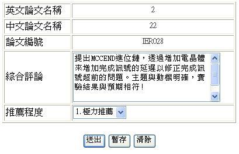
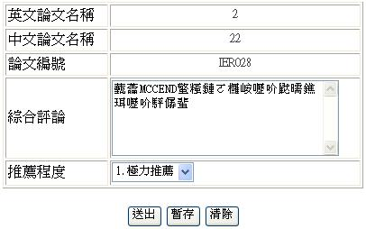
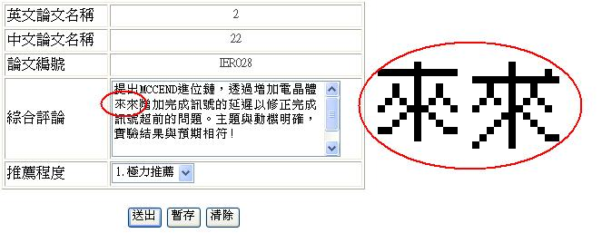
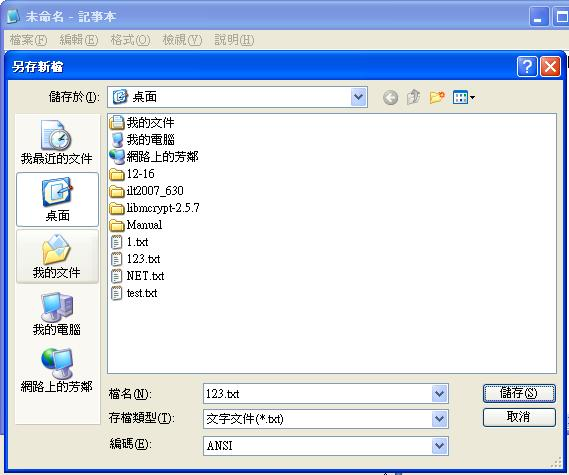
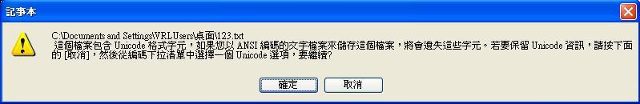

亂碼問題
一般來說會產生出現亂碼問題因該是某個輸入字元使用到BIG5以外的格式
舉例來說:
下圖看似沒問題

但是點選暫存之後從資料庫讀出來的卻變成

這個範例的問題在於當中"來"這個字的編碼使用了非big5碼的編碼，由於伺服器端使用big5編碼
故會使得輸入時編碼錯誤
下圖左邊的來是unicode右邊是big5

解決方法:
請將打好的字串複製到記事本上，然後選擇儲存

如果有編碼問題因該會出現下圖

選是之後把剛剛儲存的檔案關掉，再去儲存的地方重新打開剛剛儲存的檔案，這時把裡面的文字複製出來就可以解決資料庫亂碼問題。